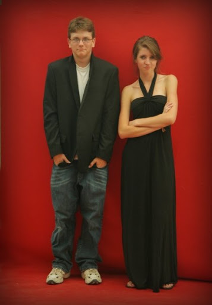
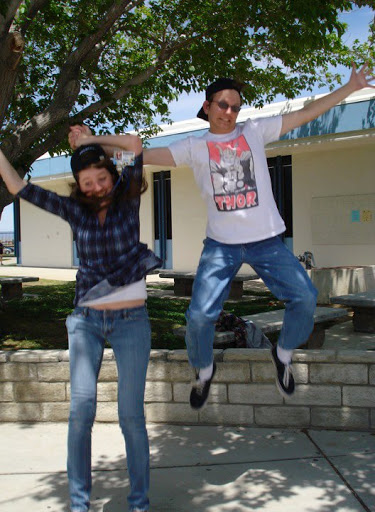
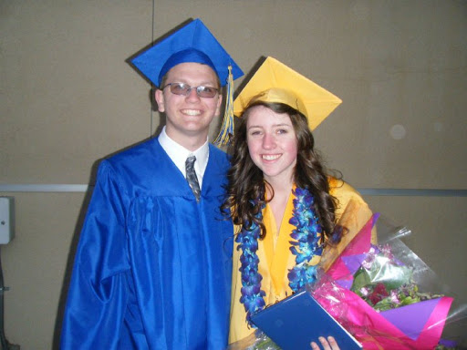
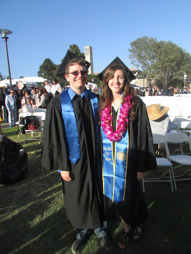
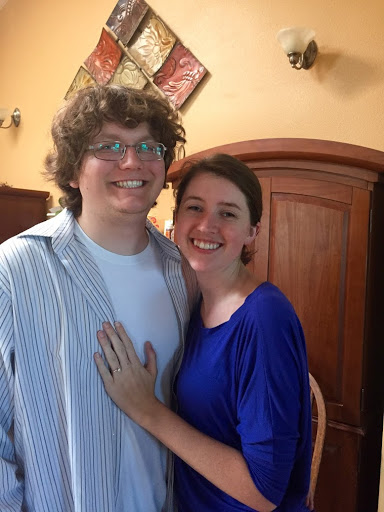

We are getting married on November 12th of 2017. We will be getting
married in Santa Cruz, CA. Both the ceremony and reception will be
held at Roaring Camp Railroads. More info to come later!
Day of Info:
Ceremony: Please arrive at Roaring camp at 1:30pm. You’ll be
boarding the train across from Bret Hall to our Redwoods
Ceremony on the top of the mountain at 2pm. It will be a
standing ceremony surrounded by nature and all our loved ones.
Limited seating available, let us know if you may need it.
What to wear: Dress is semiformal and comfortable shoes (don’t
recommend heels as you’ll be doing some walking in dirt).
Reception: Reception takes place once we get back from the
ceremony with games / cocktail hour, and dinner is at 5:15pm
Bret Hall. Calling it a night at 10pm latest.
Parking: Parking is free, please park anywhere in the Roaring Camp lot.
Navigating the Venue: From the parking lot, follow the path over the
covered bridge that says “Roaring Camp”, (there should also be a sign
for our wedding). Cross the railroad tracks and follow the path staying
to the right into the town and you’ll see the hall/train station.
Protip: getting there early gives you time to explore this awesome park,
there are old western stores, and across the way is Henry Cowell Redwoods
state park where you can take a very mild 1.5mile loop through the redwoods
Santa cruz is a pretty popular destination, there are a TON
of different lodging options in the area. The list below is
just a few but there’s lots more, so stay wherever will make
your stay most enjoyable. Feel free to call/text michael
if you have any questions.
Hotels
We did not reserve a room block because there are so many
hotels to choose from in Santa Cruz. We have looked into a
few different options which you can see below to try and fit
your respective price ranges. If none of these seem to work
for you either then don't worry just google around. Like I
said, there are a lot of hotels.
Best Western Plus All Suites Inn Santa Cruz
Close to downtown Santa Cruz and the freeway, 15 minutes to the
venue. They will also offer a ~15% discount if you say that
you are booking to attend a wedding.
New Brighton State Beach Campground
This is 20 minutes from the venue but allows you to stay
very close to the beach if that's what you would like to do.
Santa Cruz Harbor RV Park
This is 20 minutes from the venue but allows you to stay
very close to the beach if that's what you would like to do.
Others
Airbnb -
There’s tons of airbnbs around in Santa Cruz and
surrounding area, this gives you a lot of options whether
you want a cabin, house, close to the beach, downtown, etc.
Fun Things to Do
Santa cruz is one of our favorite places in the world. Our wedding
being on Sunday gives everyone the opportunity to not only celebrate
with us, but have some time to enjoy this awesome area!
Some of our favorite activities in santa cruz/surrounding area
Daytime activities:
Hiking on UC santa cruz campus/surrounding park
Go to the pier - view of santa cruz boardwalk, kayaking, shops, restaurants
Go to the boardwalk - arcade, mini golf, snacks (sadly the rides are closed for
the season) but it’s still a fun place to walk around and hang out!
Breweries =santa cruz mountain brewery, west end tap room
New Bohemia Brewing Co
Visit downtown santa cruz for shopping, movies and restaurants
Hiking in Henry Cowell state park
Go to Natural bridges beach and see the butterfly reserve(where we took our engagement photos)
More beaches:
Sunny cove beach
Seabright beach
Many more!
Visit loch lomond to rent a canoe and hang out at the lake
Take a drive up the 1 to Half Moon Bay
Take a drive down the 1 to Monterey Bay
Night time activities:
Downtown santa cruz for dinner and a movie
3 movie theaters and tons of restaurants
Feeling ambitious, the Del Mar theater does midnight movies on saturdays
Stargaze on UCSC campus / go find a cave to tell scary stories
bars/gastro pubs all over santa cruz
Our Story

Melissa and I probably first met in freshman year of high school but it
must not have been love at first sight because we weren't even confident
of each other's existence until junior year of high school. We were both
part of the same schedule of IB classes and it was there that the flirting
first began.

We tried going out once but alas, Melissa decided that she didn't like me.
So Michael spent his time sulking around for the next year...and trying to
date other girls. So the time came in senior year, the day of "No-E" where
Michael bet Melissa that he could go longer without using any word with the
letter "E" in it than she could. If he won then she would have to kiss him
and if she won then he would have to kiss her. Easily the best bet that any
teenage boy could ever make.

From that time onward we were pretty inseparable, walking to class together,
doing homework together, studying for IB tests together, eating at Primo's.
It was all awesome up until it was time to go to college. After that we had
decided to try and see if we could handle long-distance all the while talking
about the possibility of transferring from one school to the other. As we
went through school we would visit back and forth every month or so and talk
on the phone every day in order to stay in contact. We never ended up
transferring but it may have been for the best as we grew as people both in
the time that we did spend together as well as apart.

After college we moved in together in San Mateo up in the Bay Area just 20
miles south of San Francisco. Melissa started her job at EY and I finished
up my degree before starting to work at Imprivata. We continued to live
together eventually moving farther south, and having one of my college
friends move in with us. It was during this year that I had decided to
propose to Melissa. I sneakily purchased a ring while her parents were in
town to distract her and was planning on doing it during our trip to
Germany that we had been planning for a while. I ended up doing it before
though mainly for two reasons:
I ate Burger King that day, which was the same place my dad proposed to my mom.
It was Bastille Day, a holiday though slightly obscure, which I have subconsciously
been trying to have all of our important relationship steps happen on as it makes
remembering anniversaries easier and keeps me and my forgetfullness out of trouble.
I proposed to her at our house, the night before we were going to leave on the trip
and we were packing all of our stuff.

The rest is history, and so now here I am designing this website looking
back on our past and realizing how lucky I am to of found someone who I love
so wholeheartedly but also who loves me in return.
Registry
Of course we would just be happy to have your presents...I mean presence,
but we are also registered at the two places below. Click on the logos to
go to our registries at the respective store. Also we are saving up for our
honeymoon to Italy next year so feel free to donate to that as well if you
don't find something below that you like.
RSVP
Please mail us the completed RSVP card or e-mail melissa: mnnelso@gmail.com telling us:
Names of guests able to attend
Meal preferences (vegetarian vs. not and kids meal)